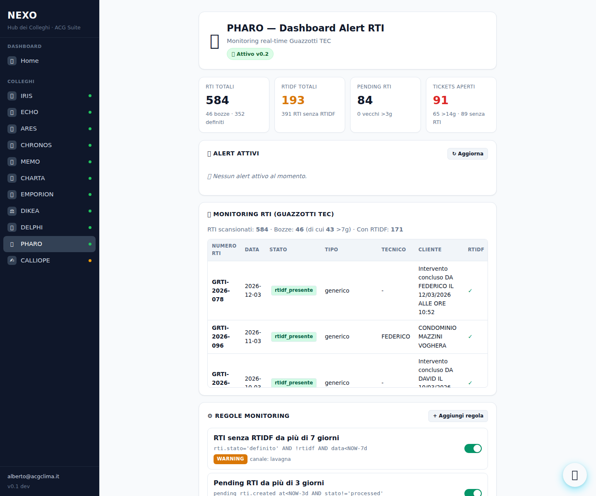

| # | Tecnico | RTI generati |
|---|---|---|
| 1 | Aime David | 221 |
| 2 | Dellafiore Lorenzo | 109 |
| 3 | Tosca Federico | 39 |
| 4 | DAVID (nome incompleto) | 35 |
| 5 | LORENZO (nome incompleto) | 29 |
💡 Debito dati: nomi duplicati (Aime David vs DAVID) — serve normalizzazione upstream.

https://europe-west1-nexo-hub-15f2d.cloudfunctions.net/pharoRtiDashboardpharoCheckRti (every 6h, Europe/Rome) scriverà automaticamente in pharo_alerts